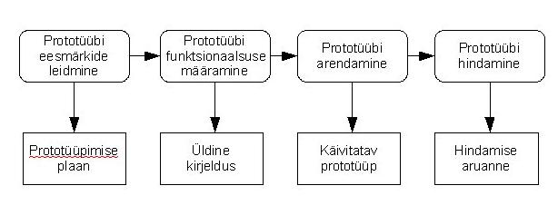

Prototüüp on süsteemi esialgne versioon, mida kasutatakse disaini testimiseks
ja ideede demonstreerimiseks. Seda saab rakendada eri arendusetappides,
nagu nõuete analüüs ja disaini kavandamine.
Prototüüpimise eelised: parem kasutusmugavus,
täpsem vastavus kasutajavajadustele,
kõrgem kvaliteet ja lihtsam hooldus.

Prototüüpimise etapid:
- Nõuete kogumine – määratakse põhivajadused ja täpsustamist vajavad aspektid.
- Kiire kavandamine – luuakse esmaversioon ehk prototüüp, mille põhjal klient saab tagasisidet anda.
- Iteratsioon – prototüüpi täiendatakse vastavalt kliendi soovidele, kuni see on rahuldav.
Ühekordne prototüüpimine (Throwaway)
Evolutsiooniline prototüüpimine (Evolutionary)
Lisanduv prototüüpimine (Incremental)